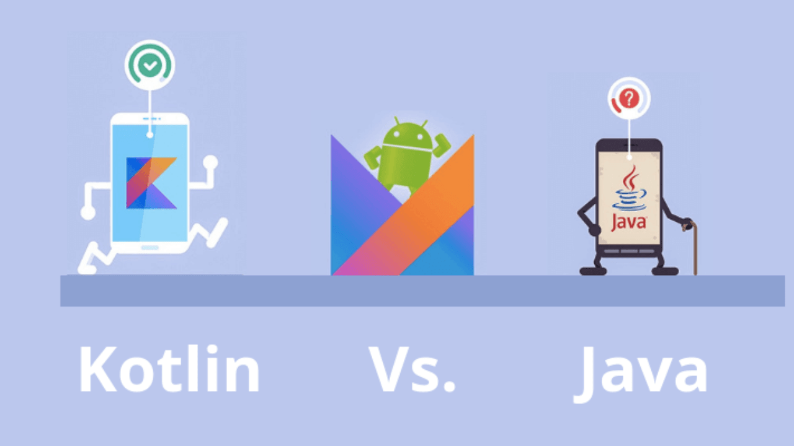

KOTLIN vs JAVA — The Great War of Android App Development
In the mobile app technologies world, Java vs Kotlin is one of the most popular search terms. If you too are looking for a comparison of Java vs Kotlin frameworks, this blog is for you!
Kotlin is a statically typed language developed by JetBrains. Similar to Java, Kotlin has become a top choice for developing Android applications. This is evident from the fact that Android Studio comes with inbuilt support for Kotlin like it has for Java.
So, the question is whether one should switch to Kotlin from Java or not? Well, it depends on preferences. However, before making the switch it’s important to understand the distinction between the two programming languages:
- Code Conciseness Kotlin is massively known for being concise, one of the important factors that give this powerful language an edge over Java. It reduces the boilerplate code up to a great extent which mitigates the risk of getting more errors as the lesser the boilerplate code, the more readable the code is. Taking an example of the syntax for a data class written in Java and Kotlin to get a clear comparison:
Null Safety One of the most infuriating issues concerning Java for developers is the NullPointerExceptions. Unlike Java, all types are non-nullable in Kotlin by default. If developers try to assign or return null in the Kotlin code, it’ll fail at compile time. However, there’s a way around it. In order to assign a null value to a variable in Kotlin, it is required to explicitly mark that variable as nullable.
This is done by adding a question mark after the type, for example:
val number: Int? = nullThus, there are no NullPointerExceptions in Kotlin.
-
Smart Casts Before an object can be cast in Java, it is mandatory to check the type. Unlike Java, Kotlin comes with the smart cast feature, which automatically handles such redundant casts. You don’t need to cast inside a statement provided it is already checked with the ‘is operator’ in Kotlin.
-
Interoperability It is the core purpose of Kotlin. From the beginning, the intention of the project was to use existing knowledge and experience so that all libraries are available to Kotlin programmers. Developers can simply write modules in Kotlin that work perfectly within the existing Java code. By issuing the Byte code, a Kotlin compiler allows the two languages to work in unison in the same project.
-
Ternary Operator Unlike Kotlin, Java has a ternary operator. The Java ternary operator simply works like a basic if statement. It consists of a condition that evaluates to true or false. Moreover, the Java ternary operator has two values. Only one of them is returned depending on whether the condition is true or false.
The syntax for the Java ternary operator is:
(condition) ? (value1) : (value 2)
- Extension Functions Kotlin allows developers to extend a class with new functionality via extension functions. These functions, although available in other programming languages like C#, aren’t available in Java.
-
Raw types Before generics, raw types were used quite frequently. Raw types allow backward compatibility, but raw types can generate a CastClassException and the error will occur during execution and not at the compilation stage. Kotlin does not allow unformatted types and, as a result, produced a more secure code for the type.
[Java Syntax]
class Example {
public class ChapterTeamFragModel {
private String ChapterName;
private String ChapterFullForm;
private int ChapPhoto;
public ChapterTeamFragModel(){
}
public ChapterTeamFragModel(String chapname, String chapterfullform, int chapterphoto){
ChapterName=chapname;
ChapterFullForm=chapterfullform;
ChapPhoto=chapterphoto;
}
public int getChapPhoto() {
return ChapPhoto;
}
public String getChapterName() {
return ChapterName;
}
public void setChapterFullForm(String chapterFullForm) {
ChapterFullForm = chapterFullForm;
}
public String getChapterFullForm() {
return ChapterFullForm;
}
public void setChapterName(String chapterName) {
ChapterName = chapterName;
}
public void setChapPhoto(int chapPhoto) {
ChapPhoto = chapPhoto;}
}
[Kotlin Syntax]
data class ChapterTeamFragModel(val ChapterName :String , val ChapterFullform :String , val ChapPhoto :Int)
Other than this, the use of Delegates, KotlinLib, and One-line functions, no use of “findViewbyids”, a shorter code for “setOnClickListener” are some more examples that help in the reduction of the boilerplate code, making Kotlin a powerful language.
Is this the end of Java?
Although Kotlin is tremendously proving itself to have an edge over Java as far as its advantages are concerned, when it comes to choosing between the two languages, there is still a sense of ambivalence among the developers. Some prefer to stick to Java because of their experience and comfort while a lot of people are gravitating towards exploring a powerful alternative to ease out their work keeping in mind the perks offered by Kotlin.
In a personal opinion, Java is surviving for a very long time. And the main argument might be the fact that Kotlin is designed to address Java’s issues.
I would say that Java is still a widely used and preferred language among a whole lot of developers and is here to persist in the industry for a longer time span due to its humongous amount of resources and documentation available for reference.
But as Google said, Kotlin is the future of Android mobile applications. It is a reliable, flexible, and secure language for both startups and enterprises. Not only it reduces errors but also crashes at run-time making debugging reliable. Furthermore, being budget-friendly and enhanced efficiency, it’s best for the companies to hire android app developers having hands-on expertise with Kotlin.
That’s it for today. Thanks for reading. Stay tuned for more content. Till then Happy Coding! 😄